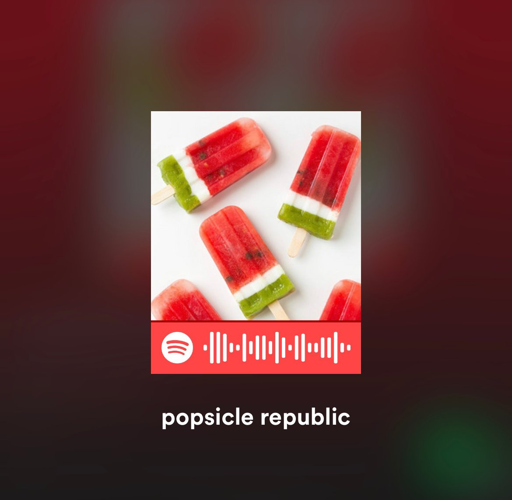

Katie:
Cosmic Country Stars, Andrew Sa
Brittany:
“A Day in the Life of Marlon Bundo,” Jill Twiss
Mimi:
Savage Lovecast, Dan Savage
Luke Collins
SVP of thought leadership and content strategy
Jennifer Bulat
managing editor
Go to Jennifer’s pick

Dreampop is the best springtime soundtrack. The young Austin-based group Sasha and the Valentines’ debut album So You Think You Found Love? gives off Beach House and Tennis vibes and is the perfect way to decorate warm days and nights. Produced by Erik Wofford, this tight,
35-minute record effortlessly swims from beginning to end, forcing you to hit repeat as it finishes. As a sucker for female-led dreampop groups,
this is easily among my favorite records of the year to date. Try to make it through the opening two tracks without getting hooked.
Boris Strelchin
controller
Go to Boris’ pick
Caroline Koch
manager of creative operations
Go to Caroline’s pick

June’s arrival means it’s finally pool season, even in Chicago. Having been a radio host in college, curating playlists is probably one of my favorite hobbies, and after the drone of 2020, I suspect most are looking
to raise the vibration. What better way to signal the start of summer than with a funky backdrop for your Pride party or late-night spicy margarita rendezvous?
When it comes to even the most impromptu summer hangs, music preparedness is key—no one wants to scramble and ultimately settle when looking for a soundtrack to set the mood. Whether in your backyard with a hose, riding down the lakefront path, or stepping onto a boat, be the champion of the Bluetooth this season with these selects.
Confession: I’ve read only one of Ernest Hemingway's books (The Old Man and the Sea), and I likely wasn’t old enough to appreciate it. As a fan of the work of Ken Burns, though, I was compelled to watch the three-part documentary Hemingway—and it did not disappoint. Hemingway was a challenging personality, to say the least. But Burns and Lynn Novick find ways to explore the tragedy, humanity, and genius of the man with clear eyes. I'm determined to start reading the rest of Hemingway’s work now. And I can’t get the idea of his lifelong quest to write “one true sentence” out of my head.
Annie:
Call Me by Your Name, Luca Guadagnino

More than anything, we’re thinking about music. What’s the best soundtrack for spring into summer? I tend to lean toward happy rock—Vampire Weekend and The Rolling Stones and The Beatles. My colleagues have their own ideas. Read on for their music picks—and a few things worth watching.
Continuing my depressing new tradition of being horrendously late to discover things the world has been buzzing about forever (yes, we only just finished Schitt’s Creek. Yes, I blame having children for this hipness demotion), my wife and I finally curled up to watch Ted Lasso. This Apple TV+ series stars Jason Sudeikis as the know-nothing American football coach brought in to manage an English Premier League team, all part of a plot by the team’s owner to stick it to her ex, from whom she inherited the club. Standard jokes about odd English customs and language abound, but the show is simply a joy. Sudeikis’ Golden Globe–winning Lasso is infectiously optimistic against all personal and professional odds, and the supporting characters are fantastic. Season two lands in late July—along with merch!—but there’s still time to inhale the 10 episodes from the first season. Football is life!

Some of our favorite content from queer creatives

Go to Luke’s pick
